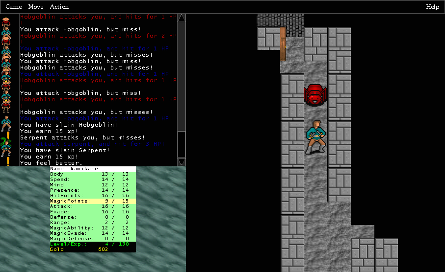

Hephaestus
Version 1.07, released 2002Apr22
Copyright © 2001-2002 by Mark Hughes <kamikaze@kuoi.asui.uidaho.edu>
HephaestusVersion 1.07, released 2002Apr22
|
|  |
| (click on image to enlarge) |
Hephaestus is a freeware computer role-playing game construction kit (often called an "RPG maker"). You can write your own adventures in a simple yet powerful scripting language, and share them with anyone else who has Hephaestus. Hephaestus is written in Java, and therefore runs on every platform.
Hephaestus uses the art library of Lost Dragon. Thanks, DeBray!
Hephaestus is the Greek god of the forge, art, and industrialization; he is the god of engineers*.
Hera's bastard son, Zeus cast him out of Olympus and he fell for a day and a night to the isle of Lemnos, leaving him lame.
During the war with the Titans, he created thunderbolts to arm the gods; during the Trojan war, he made impenetrable armor for Æneas; and for his own use he made tripods which would move at his command - the first robots!
Hephaestus is provided 'as-is', without any express or implied warranty. In no event will the author be held liable for any damages arising from the use of this software.
Hephaestus is freeware, for personal use only. You are permitted to download and use it at no charge. You may not redistribute it without the author's express written permission.
Adventures you have written belong to you - you may distribute them under any terms you like. You may not bundle Hephaestus with them, instead you should provide a link to the Hephaestus home page <http://kuoi.asui.uidaho.edu/~kamikaze/Hephaestus/>.
If you would like to have your adventures, images, or sounds become part of the standard Hephaestus distribution, contact the author.
./heph.shheph.bathephaestus.jar, or open a terminal
window and run ./heph.shYou can type the following command at your shell (this works in Unix, Windows, and MacOS X) to see which version of Java you have installed:
% java -version
There are three mailing lists for Hephaestus:
Last modified: 2002Apr22
Hephaestus 1.07
{kind=link}